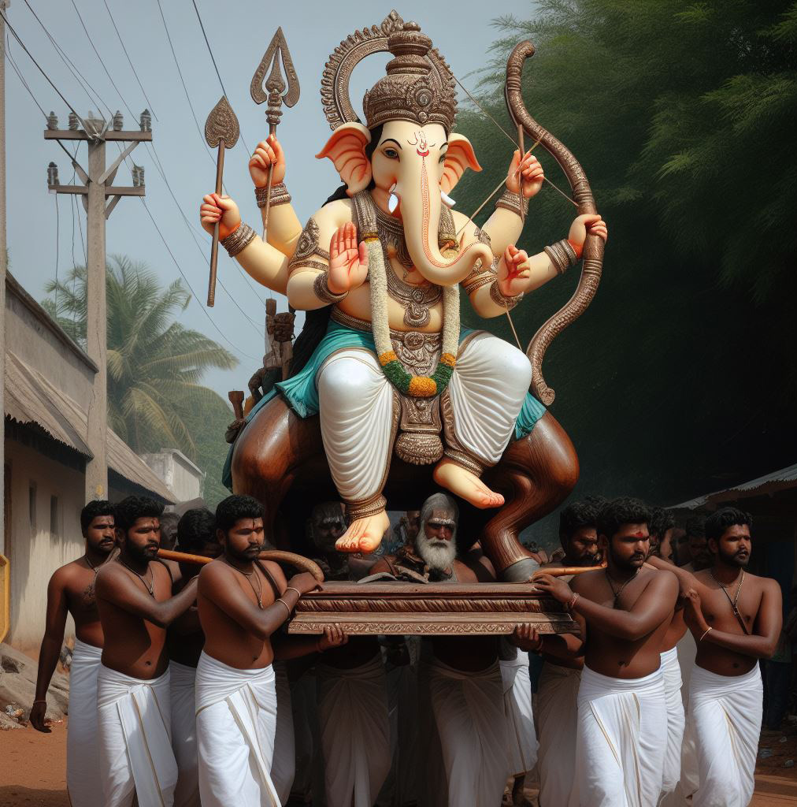

Arjuna Ranatunga Criticizes Mahela and Sangakkara for Failing Sri Lanka's Future Cricketers
Arjuna Ranatunga Criticizes Mahela and Sangakkara for Failing Sri Lanka's Future Cricketers
Jaffna Monitor hellojaffnamonitor@gmail.com 8 I n a recent television interview, former Sri Lankan cricket captain Arjuna Ranatunga raised severe concerns about the state of cricket in Sri Lanka, both in terms of player development and governance. He criticized former players Kumar Sangakkara, Mahela Jayawardene, and Tillakaratne Dilshan for not preparing the next generation, specifically Dinesh Chandimal and Lahiru Thirimanne, to fill their shoes after retirement. Ranatunga suggested that this lack of mentorship hindered a smooth transition and impacted the team's performance and stability. Additionally, Ranatunga highlighted the pervasive corruption issue within Sri Lanka Cricket (SLC). He shared an unsettling experience where he was blatantly asked about the amount of money he could offer in exchange for votes, illustrating the extent of the corruption. This situation revealed that financial incentives were prioritized over genuine efforts to improve the sport. Ranatunga even claimed that the depth of corruption was so severe that someone as famous as Mahinda Rajapaksa would be unable to win an SLC election. These comments from Ranatunga, a respected figure in Sri Lankan cricket, shed light on the challenges facing the sport in the country. The issues of poor succession planning and deep-rooted corruption suggest a need for significant reforms in the administration and management of cricket in Sri Lanka. Arjuna Ranatunga Criticizes Mahela and Sangakkara for Failing Sri Lanka's Future Cricketers MONITOR MEMO

Jaffna Monitor
hellojaffnamonitor@gmail.com
9
The Hunting Festival
Translated from the
original Tamil short
story vēṭṭait tiruviḻā
(Ntl;ilj; jpUtpoh)
from the 1976 collection
of short stories titled
kōṭukaḷum kōlaṅkalum
(NfhLfSk; Nfhyq;fSk;)
by Kuppilan Ai.
Shanmugan
Translated by:
eḻuttukkiṉiyavaṉ
(vOj;Jf;fpdpatd;)
STORY
"True devotees..."
The crowd was momentarily stunned when the majestic
voice boomed through the public address system. But the
bustle was instantly restored as if the crowd wanted to
declare that none among them are really true devotees.
Children ran around boisterously engrossed in their games.
Women were busy either “counting days in their monthly
calendars'' to see if it would be appropriate for them to visit
the temple on the day of the chariot festival, or gossiping
and laughing about the sarees, jewelry, and the outlooks
of other women. The white-vēṭṭi-and-wristwatch crowd
of men who work in the city but had come back to the
village on vacation, had taken refuge under the shadows
of the peepul tree on the south side, and the portia tree
Jaffna Monitor hellojaffnamonitor@gmail.com 10 east of it. They held forth knowingly, trying very hard to impress their audience, on the political situation in the city, the secret plans of ministers, and the shortcomings of the current government. Some others took these utterances as gospel and kept on vigorously nodding their heads in agreement. A few of the devout villagers were bustling about attending to various chores. “Our omnipotent Lord is embarking on his hunt. He is sitting atop a beautiful horse for his procession. Behold that wonderful sight! Confide your concerns and sorrows in him and seek relief.” The devotees got themselves ready to appeal to the deity about their myriad sundry concerns in the hope of obtaining relief. Mounted on horseback, the deity made a grand entrance. They had decorated him with colorful flower garlands and clothing. A long staff had been thrust into one of his hands, a bow and arrow in another, and a third was holding the horse’s reins. This deity has five hands; he is the Vigneswaran who removes all hindrances; Ganapathy, Vinayagan. Sometimes he is angry; sometimes he is happy and jolly; sometimes he is bored; sometimes he is into a beatific trance without caring about anything else. Right now, I thought I saw him with a subtle smile. I must tell you a lot more about him and me. His temple is on the north side of the village. He had more possessions than a noteworthy rich man in the village. Now, he and I are like friends on nodding terms. He always had a certain haughtiness that one expects from a spoiled brat. He is older than me, many times over. My parents introduced him to me when I was a mere toddler. I had great respect for him then. To be totally honest, it was respect tinged with fear that he might choose to do me some harm. Later, I respected him because I wanted his friendship to fulfill my wants and needs. Sometimes when my wants were not met or when my hopes were dashed, I was incensed into trying to ignore him. Now our relationship has reached an amicable state. I have this urge to have an even closer relationship so that I feel obliged to visit him whenever there are special festivities at his home. The hunting procession began. Children chanted arōkarā loudly; Some held victory flags and proceeded with a skip and a jump; others walked with great composure, holding oil-fed torches aloft. A prayer troupe followed the deity. Muscular young men took turns carrying the deity, hoping to gain his grace. A colorful procession of women floated along slowly. The deity had set off on the hunt with his entourage. I, too, joined the procession as part of his entourage. I walked witnessing the occasional diversions and amusements along the way. From time to time, I glanced at the holy face of the compassionate deity. I felt that the same smile was constant on his face. The setting sun cast its rays through the gaps in the
Jaffna Monitor hellojaffnamonitor@gmail.com 11 coconut trees that surrounded the field wells on the southwest side of the temple, and the green trees that enveloped the houses dotting the landscape. A gentle breeze wafted through, accompanied by the melodic waves of nādhaasvaram. I let my heart, numbed from the sorrows of the mechanical city life, to delight itself in the lively beauty, motions, and naivete of the village life. My reverie was suddenly interrupted by the sight of that woman among the throng of women, her hands brought together above her head in veneration and devotion. The sight grated on me. From my birth until I was a strapping youth of twenty, I lived among naive villagers as one of them. I played, learned, and dreamed the dreams of youth in that milieu. It is in this same milieu that I grew up, learning to be the rock that bears the joys and sorrows of life. I had encountered that woman in those times; I even remember talking to and laughing with her on a couple of occasions. Never on those occasions did her face stand out in any way. But now, that face with the buck teeth protruding through the small mouth grated on me. She was wearing a simple handl oom saree. Although she was four or five years older than me, she looked like a young woman unfamiliar with the maturity or ravages of age. With her hands brought together above her head, she was immersed in her devotion, oblivious to her surroundings. A golden thāli glittered brightly on her neck. How is she able to be unwavering in her peace? How is she able to worship God in that understated quiet manner? How is she able to immerse herself in her joy oblivious even to her own self? How is she able to become one with the essence of life? The drum roared dum dum dum. They had placed a niraikudam at the entrance of a house along the way. The priest uttered the requisite religious incantations and waved a lamp in front of the deity. The rays of the evening sun reflected off the bronze niraikudam in a yellow glitter. Someone climbed on top of the wooden horse hoisted by the young men, and draped a red silk cloth over the deity. The crowd chanted arōkarā. She, too, stood with her hands clasped in worship. I looked at the deity. All I could see was his mysterious smile. The procession inched forward. Some people tried to squeeze the procession to one side of the road to make way for a car to go past. Someone removed the sālvai wrapped around their waist, flapped it vigorously and called out “arōkarā for a path, arōkarā for a path.” Someone else broke off a branch from the portia tree in a roadside fence and growled at the

Jaffna Monitor hellojaffnamonitor@gmail.com 12 children, “make way you rascals!” Somehow the big car managed to go past the procession. Inside a man and a woman were sitting at the front. The man was driving. The woman looked at the procession with interest and said something to the man. As the car drove over the land parched by the summer heat, it left a trail of dust. “What awful dust!” someone moaned. “How can we have a hunt without dust?” responded another. The crowd guffawed. I looked at the merciful deity. He too was smiling. For someone setting out on a hunt, there was no bravery to be seen on his face. What a meaningful, sarcastic smile! The hunting grounds were only a little distance away. Off the road, on a red-earth patch of land behind the temple on the eastern side, the field for the hunt had been set up. The ground had been swept clean and sprinkled with water to sanctify the area. In the middle, a fat virgin plantain tree was placed and suitably reinforced. The crowd of people formed a circle of about thirty yards in diameter, centered around the plantain tree. The deity stood among the people along with his closest retinue, like a tiger ready to pounce. They circled the tree quickly at a rapid trot while carrying the deity; they strutted around thrice. The horse rocked back and forth with its forelegs in the air. The old priest held a sharp sword and stood at the ready near the tree. They ran back and forth while carrying the deity.
Jaffna Monitor hellojaffnamonitor@gmail.com 13 On the third time, as the deity retreated and then advanced, the priest hoisted the sword and swung it across the plantain tree. With the same motion, he swung it again in the reverse direction. The first swing cut the tree into two, the reverse swing did no damage to the tree. The drumming reached a crescendo: dum, dum, dum. The nādhaasvaram played the ghaṉarāgam at length.The conch roared. The crowd chanted in devotional ecstasy. Fragrant rosewater was sprinkled on to the deity. Vermillion was sprinkled on to the chopped off piece of the plantain tree and water was poured on it. An ālaththi was done for the deity using a five-pronged lamp with five oil- lit flames. A piece of the “kill” was wrapped up in a piece of cloth and was tied to a foreleg of the wooden horse on which the deity was riding. From whence did that face get this radiance…? That face…? That sad, frustrated, parched face that uncomfortably encountered him often on the way to school four or five years ago…? She smiled, crinkling her forehead with the vermillion poṭṭu, her thāli glittering a bright yellow against the blue backdrop of her clothes. She has still not forgotten me. Or has she tried not to forget me? Or is she incapable of forgetting me? The hunt ended and the procession began again. The points carrying lives moved about out of tune. Where did this great silence descend…! How did this bustle disappear …! Is the silence that follows a great outpouring of emotion similar to this…! The profound silence that succeeds great emotional upheavals. A complete silence; A silence replete with heartfelt poetic beauty…, Is this what bliss is! Is this the meaning of life! I regarded the deity. All-knowing, he smiled serenely. That deity has five hands; He is the Vigneswaran who removes all hindrances; Ganapathy, Vinayagan. Some Images Sourced from Bing